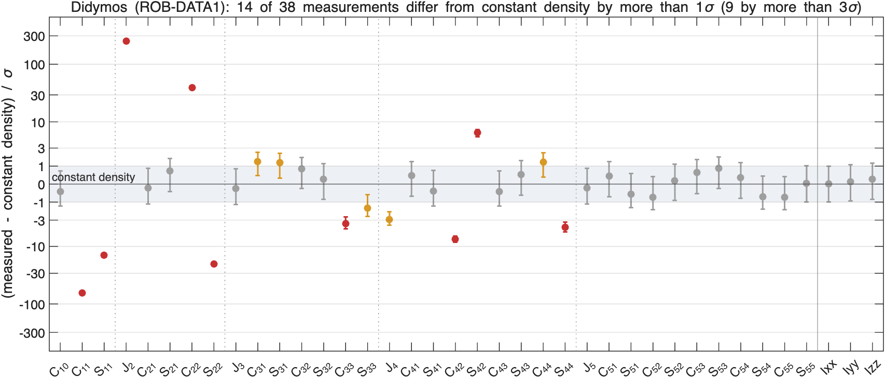
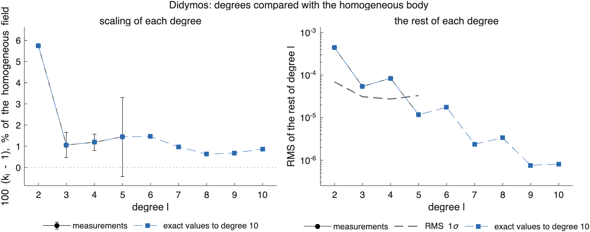
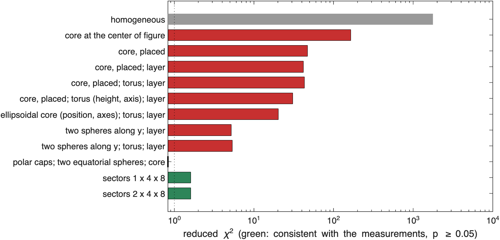
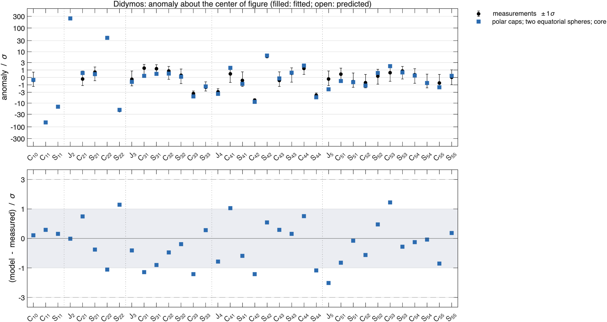
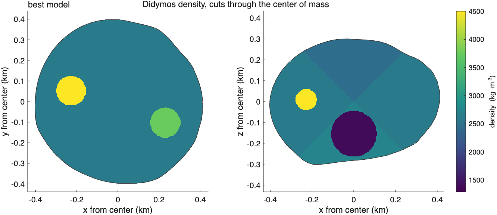
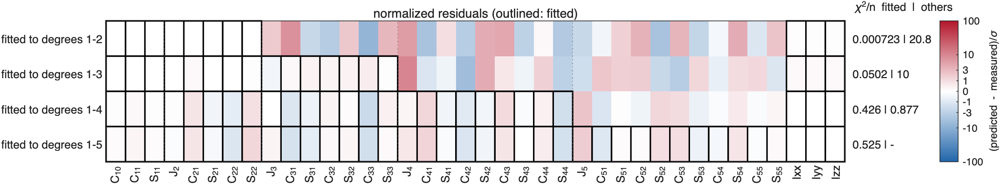
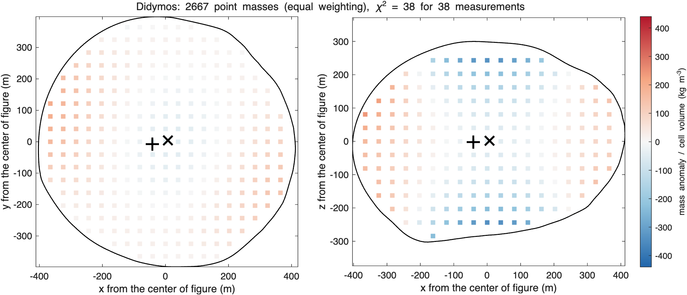

ROB-DATA1: Didymos#
Last edited October 27, 2026
Result. Mass is moved toward the equator and concentrated at two opposite longitudes: degree 2 is 5.7% larger than the homogeneous body's and 33σ larger. Two descriptions fit every coefficient to degree 5:
- a light northern cap, two dense bodies at the equator about 250 m out on opposite sides along the −24°/156° direction, and a light region deep below the center (reduced 0.83, );
- 32 sectors with light polar caps and denser equatorial bands peaking at the same longitudes (1.6, ).
Cores, layers, tori and ellipsoids alone do not (20 at best). Fitted to degrees 1–4, the model with the two bodies predicts degree 5. The package's mass corresponds to 2602 kg/m³.
Reading#

Didymos (ROB-DATA1): anomaly about the center of figure, degrees 1 to 5
center of mass - center of figure: [-0.58 -0.13 -0.03] m +- [0.01 0.01 0.10] m, |offset| 0.59 m
chi-square of the offset: 4522 for 3 degrees of freedom
degree RMS anomaly RMS 1-sigma ratio k_l +- 1-sigma residual chi2 / dof
1 4.833e-04 8.022e-05
2 1.130e-03 6.924e-05 1.05749 +- 0.00047 1350 / 4
3 5.750e-05 3.108e-05 1.01055 +- 0.00591 20.33 / 6
4 8.699e-05 2.744e-05 1.01182 +- 0.00379 106.4 / 8
5 1.338e-05 3.308e-05 1.01439 +- 0.01865 1.86 / 10
one compact mass with the same degrees 1 and 2: -5.760% +- 0.047% of the mass (-3.06e+10 kg) at [10.0 2.3 0.6] m +- [0.2 0.2 1.7] m from the center of figure- Degree 2 is scaled up by 5.7%, degrees 3–5 by 1–1.4%: the opposite of a dense core. Mass is farther from the center than in the homogeneous body, or the center is light.
- The rest of degree 2 ( 1350 for 4 degrees of freedom) is (+33σ), (+14σ) and (−10σ): beyond the scaling, the body is more elongated, along of the rest, −12°, between the x-axis and the homogeneous body's own long axis (−32°).
- The center of mass is 0.58 m toward −x.
- One compact mass with degrees 1 and 2: −5.8% of the mass (a deficit) 10 m toward +x, opposite the center-of-mass offset.

Models#

model chi2/nu p params components (relative density +- 1 sigma, kg/m^3; centers from the center of figure, m)
homogeneous 1.77e+03 0 0.0 background 2603
core at the center of figure 165 0 1.0 background 2745 | core -2217 +- 9 at [0 0 0]
core, placed 47.2 2.2e-316 4.0 background 2746 | core -2227 +- 9 at [10 2 1]
core, placed; layer 41.9 2.2e-269 5.0 background 2920 | core -2920 +- 104 at [8 2 0] | regolith -1505 +- 221
core, placed; torus; layer 42.9 1.6e-268 6.0 background 2888 | core -2888 +- 104 at [8 2 0] | torus -31 +- 11 at [0 0 0] | regolith -1123 +- 242
core, placed; torus (height, axis); layer 30.8 2.1e-169 9.0 background 2842 | core -2842 +- 115 at [1 2 2] | torus -194 +- 10 at [0 0 -78] | regolith -498 +- 261
ellipsoidal core (position, axes); torus; layer 20.2 4.1e-105 9.0 background 2821 | core -2821 +- 132 at [9 2 3] | torus +77 +- 12 at [0 0 0] | regolith -555 +- 177
two spheres along y; layer 5.22 1.6e-18 9.0 background 3143 | core -1435 +- 161 at [-5 -80 -2] | second -2747 +- 149 at [12 43 1] | regolith -3143 +- 231
two spheres along y; torus; layer 5.36 1.2e-18 10.0 background 3148 | core -1424 +- 170 at [-4 -81 -2] | second -2814 +- 157 at [11 42 1] | torus -12 +- 12 at [0 0 0] | regolith -3148 +- 261
polar caps; two equatorial spheres; core 0.831 0.7 14.0 background 2622 | north -179 +- 7 | south +112 +- 65 | east +1133 +- 194 at [230 -102 1] | west +1878 +- 178 at [-228 52 10] | core -1334 +- 368 at [0 5 -155]
sectors 1 x 4 x 8 1.6 0.05 19.9 background 2603 | s111 -161 +- 24 | s112 -168 +- 28 | s113 -181 +- 29 | s114 -209 +- 28 | s115 -180 +- 30 | s116 -174 +- 27 | s117 -160 +- 25 | s118 -145 +- 24 | s121 +54 +- 8 | s122 +0 +- 9 | s123 +25 +- 6 | s124 +94 +- 7 | s125 +23 +- 9 | s126 +0 +- 8 | s127 +21 +- 7 | s128 +103 +- 8 | s131 +64 +- 9 | s132 -1 +- 9 | s133 +26 +- 8 | s134 +77 +- 7 | s135 +16 +- 9 | s136 +5 +- 8 | s137 +14 +- 8 | s138 +134 +- 8 | s141 -148 +- 28 | s142 -166 +- 26 | s143 -193 +- 27 | s144 -220 +- 27 | s145 -198 +- 27 | s146 -163 +- 25 | s147 -160 +- 26 | s148 -159 +- 27
sectors 2 x 4 x 8 1.61 0.05 20.4 background 2603 | s111 -15 +- 37 | s112 -13 +- 37 | s113 -12 +- 37 | s114 -14 +- 37 | s115 -13 +- 37 | s116 -13 +- 37 | s117 -14 +- 37 | s118 -15 +- 37 | s121 -27 +- 37 | s122 -29 +- 37 | s123 -37 +- 37 | s124 -37 +- 37 | s125 -33 +- 37 | s126 -30 +- 37 | s127 -29 +- 37 | s128 -24 +- 37 | s131 -24 +- 37 | s132 -28 +- 37 | s133 -32 +- 37 | s134 -37 +- 37 | s135 -32 +- 37 | s136 -30 +- 37 | s137 -26 +- 37 | s138 -23 +- 37 | s141 -12 +- 37 | s142 -13 +- 37 | s143 -13 +- 37 | s144 -14 +- 37 | s145 -14 +- 37 | s146 -14 +- 37 | s147 -13 +- 37 | s148 -13 +- 37 | s211 -156 +- 26 | s212 -167 +- 30 | s213 -180 +- 31 | s214 -209 +- 30 | s215 -183 +- 32 | s216 -176 +- 29 | s217 -159 +- 27 | s218 -140 +- 26 | s221 +59 +- 8 | s222 +5 +- 9 | s223 +29 +- 7 | s224 +100 +- 8 | s225 +27 +- 9 | s226 +4 +- 9 | s227 +24 +- 7 | s228 +109 +- 8 | s231 +69 +- 9 | s232 +3 +- 9 | s233 +31 +- 8 | s234 +81 +- 7 | s235 +20 +- 9 | s236 +7 +- 8 | s237 +17 +- 8 | s238 +141 +- 9 | s241 -146 +- 30 | s242 -164 +- 29 | s243 -192 +- 30 | s244 -219 +- 30 | s245 -198 +- 30 | s246 -162 +- 28 | s247 -159 +- 28 | s248 -159 +- 30
best: polar caps; two equatorial spheres; core- A light core (−2200 kg/m³, nearly empty) fits the scaled-up degree 2 but not its shape: 165 at the center of figure, 47 placed 10 m toward +x. Layers, tori and an elongated light core bring it to 20, not below.
- Two light spheres along y with a crust of zero density: 5.2, the light material elongated along y, the crust at its bound. The light center is not the whole story.
- The sectors showed the pattern: light polar caps (−145 to −220 ± 27 kg/m³) and denser equatorial bands, highest at the longitudes −45° to 0° and 135° to 180° (+77 to +134 ± 8 kg/m³). The parametric model built from it, a sector for each polar cap, two spheres of 73 m radius started 255 m out along −20° and 160° and a core, reaches 0.83. The western body ends at the density bound (4500 kg/m³), which says the excess is spread over more volume than a 73 m sphere; the eastern one is +1130 ± 190 kg/m³ above the background, the light core −1330 ± 370 kg/m³, 155 m below the center of figure.


The sector densities (kg/m³ relative to the background; rows from the south pole to the north pole, columns of longitude from −180° to 180° in steps of 45°; 1σ about 27 in the polar rows and 8 in the others):
lat \ lon -180 -135 -90 -45 0 45 90 135
-90..-45 -161 -168 -181 -209 -180 -174 -160 -145
-45.. 0 54 0 25 94 23 0 21 103
0.. 45 64 -1 26 77 16 5 14 134
45.. 90 -148 -166 -193 -220 -198 -163 -160 -159How far the model reaches#
fitted to chi2/nu chi2/n fitted chi2/n others
degrees 1-2 0.00397 0.000723 20.8
degrees 1-3 0.226 0.0502 10
degrees 1-4 0.885 0.426 0.877
degrees 1-5 0.831 0.525 -
Fraction of each degree's anomaly (exact values) reproduced, 1 - |model - given|^2/|given|^2:
fitted to 1 2 3 4 5 6 7 8 9 10
degrees 1-2 1.00 1.00 -8.71 -0.23 -31.42 -1.79 -88.87 -13.06 -149.78 -45.26
degrees 1-3 1.00 1.00 0.97 -0.55 -3.57 -3.54 -59.74 -42.83 -249.90 -181.50
degrees 1-4 1.00 1.00 0.75 0.92 -9.62 0.47 -11.89 -0.74 -13.29 0.20
degrees 1-5 1.00 1.00 0.84 0.92 -5.91 0.63 -8.41 -0.29 -9.95 0.09

- Fitted to degrees 1–2 or 1–3, the model with 14 parameters has too many for the coefficients (reduced near 0) and predicts the others badly (21 and 10 per coefficient). Fitted to degrees 1–4, it predicts degree 5 with 0.88 per coefficient.
- Of the exact values it reproduces degrees 1–4 (84–100%) and the even degrees 6 and 10 partly, but adds far too much to the odd degrees 5, 7 and 9: two compact bodies 250 m out make sharp odd-degree terms that the hidden interior does not have. The model is good to degree 4; beyond it the dense equatorial material is more spread out than two spheres.
Point masses#


equal weighting: 2667 points every 40.6 m, lambda 2.26e-08, chi2 38 for 38 measurements; positive 6.19e+09 kg at [-42 -8 -2] m, negative -6.19e+09 kg at [7 4 2] m
sensitivity weighting: 2667 points every 40.6 m, lambda 2.34, chi2 38 for 38 measurements; positive 7.99e+09 kg at [-34 -5 -1] m, negative -7.99e+09 kg at [5 4 2] mThe point masses give a light center (−550 kg/m³ in the inner fifth of the radius, sensitivity weighting) and denser outer parts, with the excess on the −x side: the light interior that every core model found, and the outward shift of mass. They do not resolve the two equatorial concentrations, which need the higher degrees that a minimum-norm solution of 38 numbers spreads out.